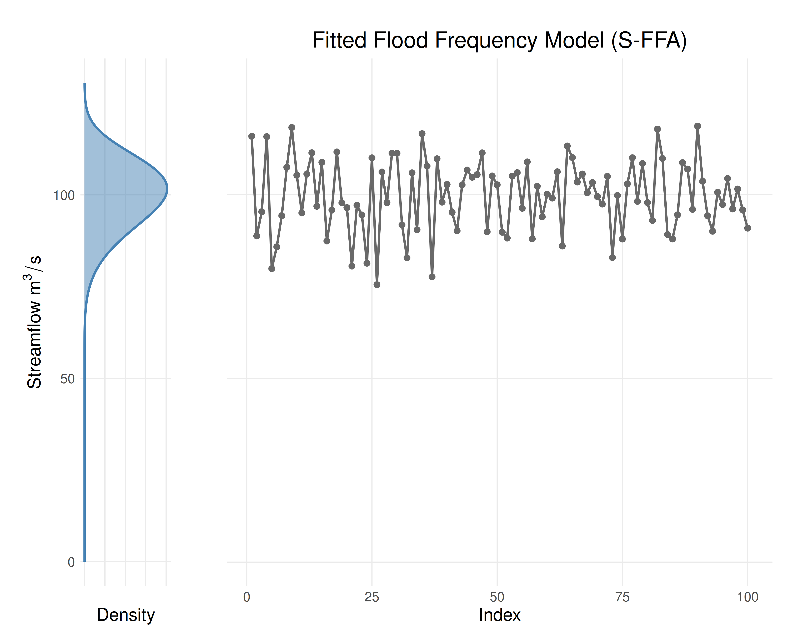

Generates a plot with a stationary probability distribution plotted vertically on the left panel and the data on the right panel.
Arguments
- results
A fitted flood frequency model generated by
fit_lmoments(),fit_mle()orfit_gmle().- show_line
If
TRUE(default), draw a fitted line through the data.- ...
Optional named arguments: 'title', 'xlabel', and 'ylabel'.
Value
ggplot; a plot showing:
The likelihood function of the distribution plotted vertically on the left panel.
The data, connected with a line if
show_line == TRUE, on the right panel.
Examples
data <- rnorm(n = 100, mean = 100, sd = 10)
years <- seq(from = 1901, to = 2000)
results <- fit_lmoments(data, "WEI")
plot_sffa_fit(results)
